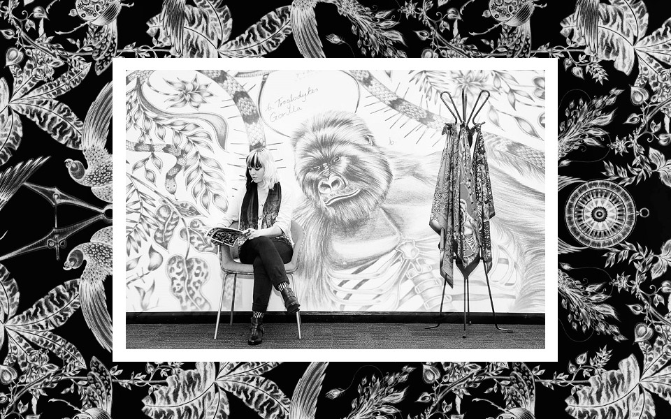
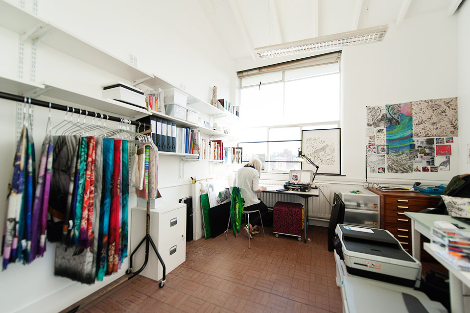

Imagination works
Emma J Shipley is a luxury lifestyle brand known for graphic artistry and imagination.
Studied at the prestigious Royal College of Art and was awarded a number of prizes during her studies, Emma J Shipley is a graphic artist specializing in fine drawing, luxury scarves and womenswear. On graduating in 2011, the famous London boutique Browns bought her graduate collection of printed silk scarves. Following on from this success, Emma J Shipley has won the Emerging Fashion Brand prize at the WGSN Global Fashion Awards and the RISE Newcomer Award at the UK Fashion & Textile Awards, presented by HRH Princess Anne, which made her works and name acknowledged in the fashion world.
Emma J Shipley's graphic designs are inspired by the irregular pattern's and unique beauty in nature, exploring surreal fantasy, imagination and evolution. Travel is also a huge inspiration, and recent collections have been inspired by trips to the Amazon jungle, a South African safari and a Scottish Highlands hike. Each artwork is intricately hand drawn in pencil, before being printed onto the finest fabrics and handmade in Italy.
The eponymous luxury scarf and womenswear label launched at London Fashion Week in 2012 and is now stocked in some of the best department stores and boutiques around the world, including Liberty and Fortnums in London, Le Bon Marché in Paris and Harvey Nichols Hong Kong.


---
Video of AW14 Collection